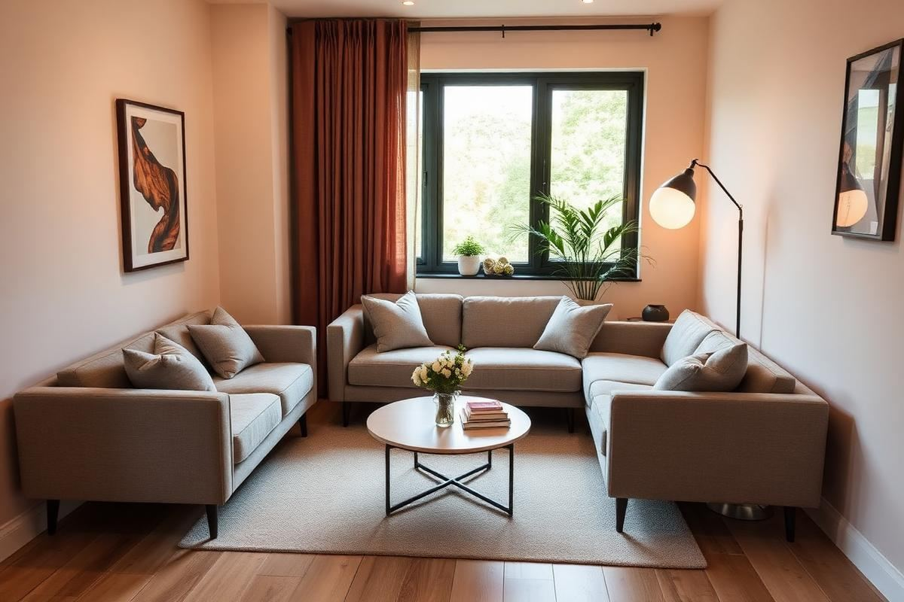
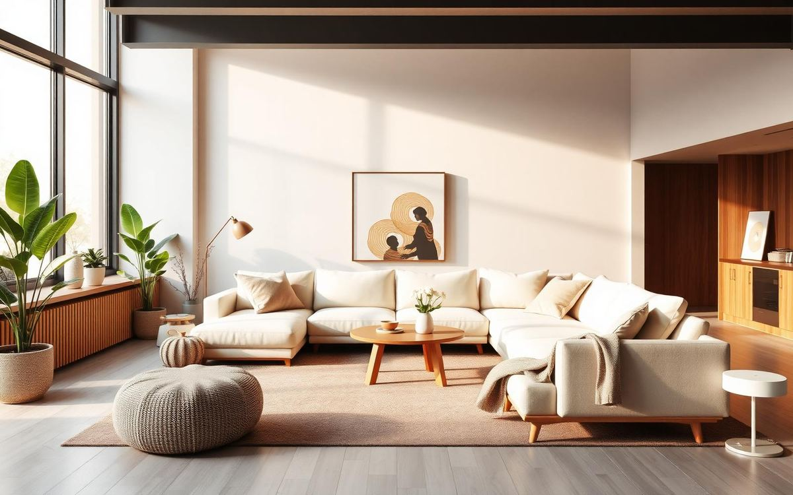
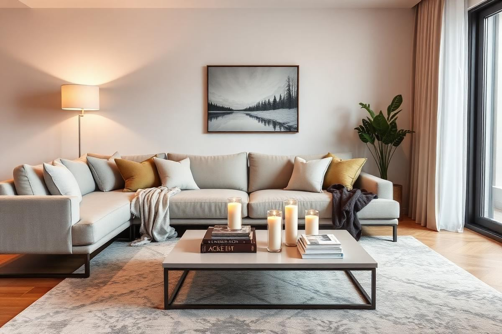
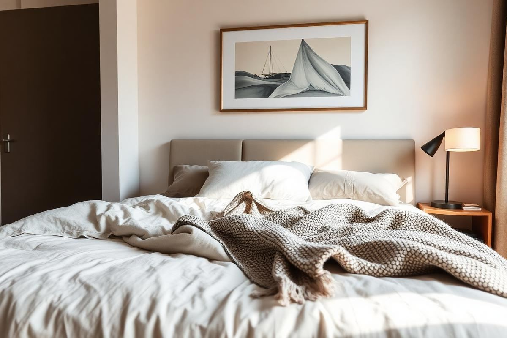
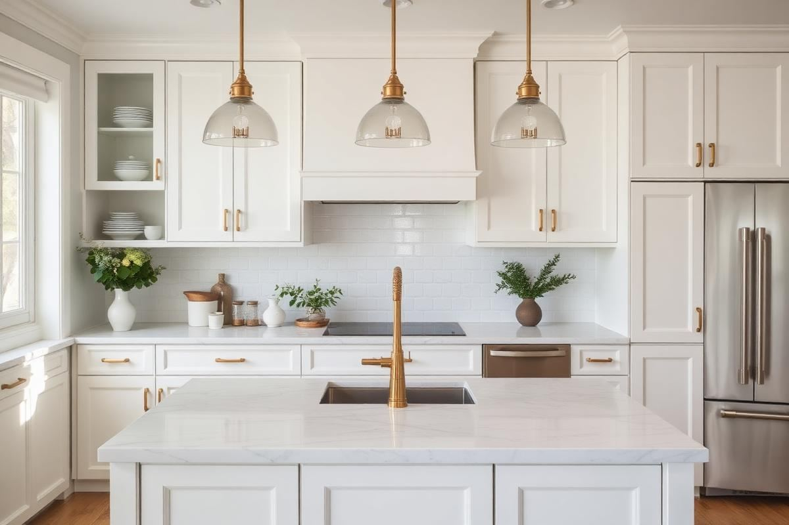
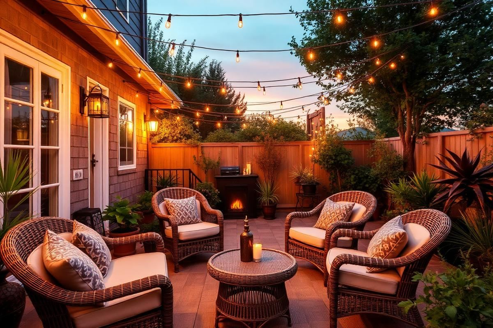
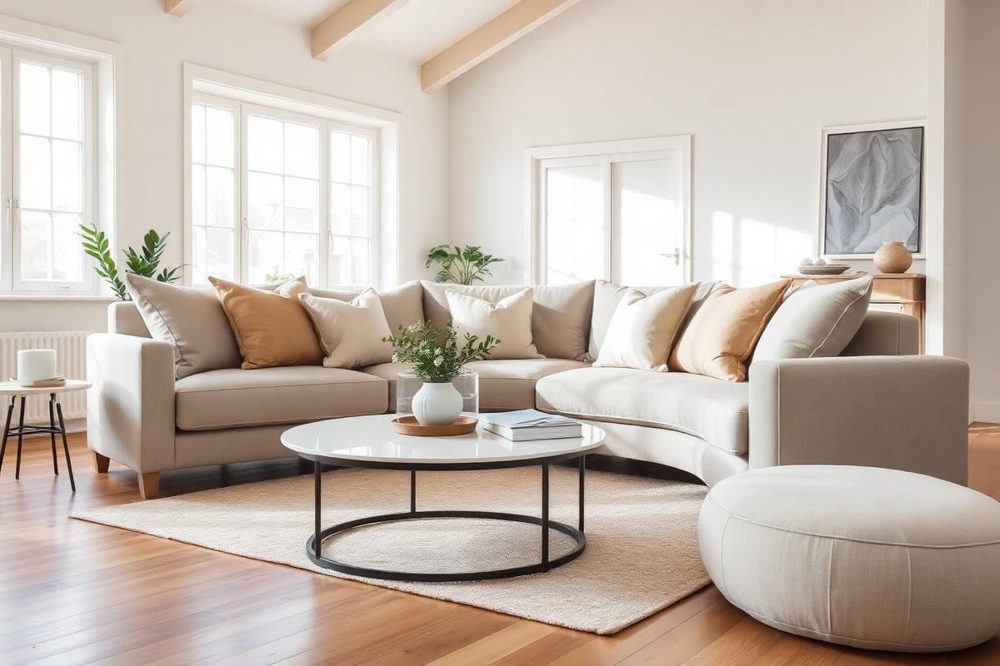
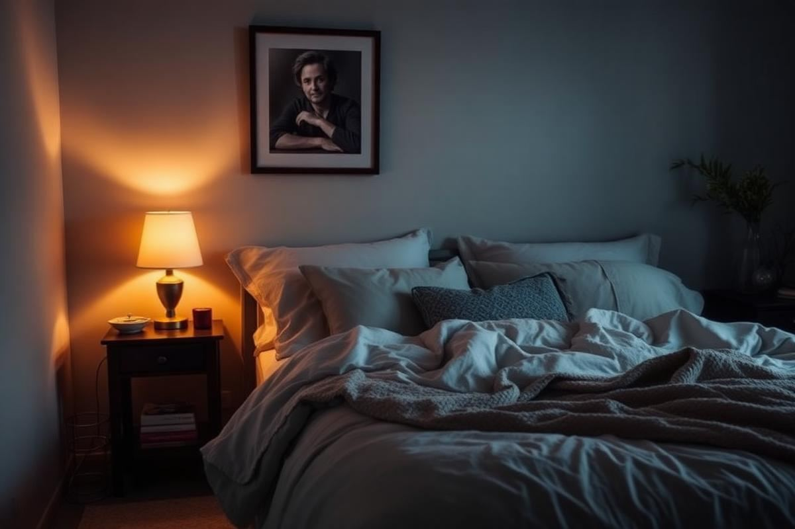
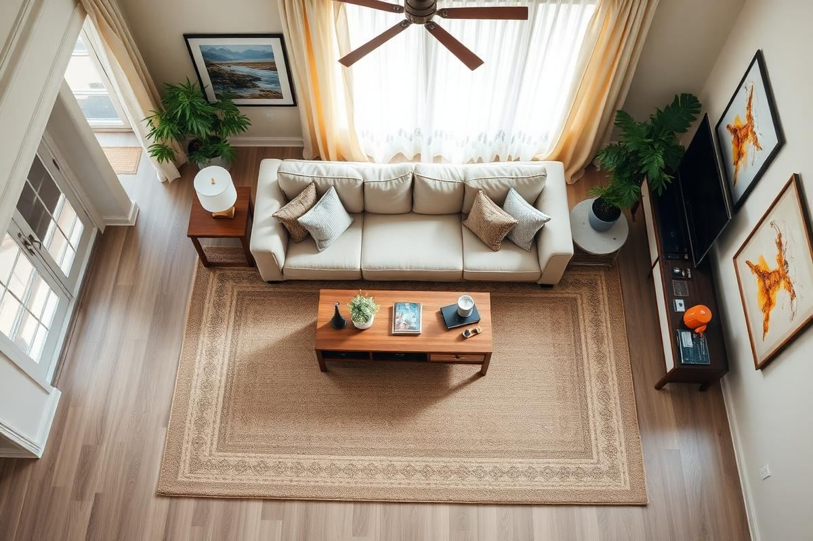
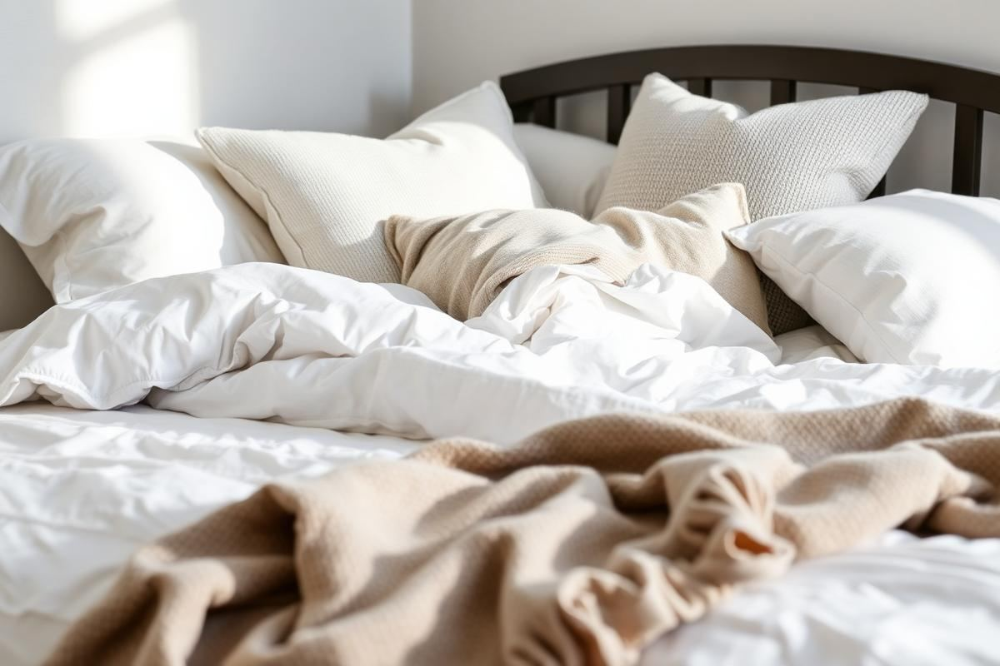

Living Room
Small Living Room Layout Ideas That Actually Work
The right layout can make a 12x12 living room feel generous. Here is the exact process a stylist uses to plan one, from focal point to rug size.
8 min read
Styleire is an independent home decor publication with practical guides, expert styling advice, and inspiration for every room of your home.

Six specialized sections, hundreds of ideas.

Layout, sofas, rugs, lighting, and styling ideas to build a living room that looks great and works for everyday life.

Restful bedrooms start with the right bed, bedding, lighting, and layout. Practical guides for every bedroom size.

Kitchen updates, dining room styling, and smart storage ideas that make the heart of the home more beautiful and usable.

Patios, balconies, and gardens. How to style outdoor rooms that feel like an extension of your home.
Hands-on projects, upcycling, and craft ideas from beginner-friendly to weekend-long transformations.
Season-by-season decorating guides and honest coverage of the trends worth investing in — and the ones worth skipping.

The right layout can make a 12x12 living room feel generous. Here is the exact process a stylist uses to plan one, from focal point to rug size.

A good sofa lasts fifteen years. Here is how to make sure the one you buy is one of them.

Cozy is a feeling built from small, specific choices. Here are the twelve that make the biggest difference.
The right layout can make a 12x12 living room feel generous. Here is the exact process a stylist uses to plan one, from focal point to rug size.
A good sofa lasts fifteen years. Here is how to make sure the one you buy is one of them.

A too-small rug is the most common decorating mistake. Here is how to size a rug for any living room layout.
Cozy is a feeling built from small, specific choices. Here are the twelve that make the biggest difference.

A small bedroom does not need to feel cramped. It needs a layout that respects the walking path and the light.

Thread count is mostly noise. Here is what actually determines how bedding feels.